Before you build a robot, you need to know what all the parts are. By the end of this lesson you'll be able to pick up any part from the kit and say what it is, what it's for, and how to install it without wrecking it.
FTC building systems such as goBILDA use metric hardware. Every screw, nut, shaft and bearing is measured in millimeters. If you're used to hardware-store sizes like 1/4-20, you'll need to switch.
The M number is the screw's diameter in millimeters. M4×12 means a 4 mm diameter screw that's 12 mm long. Diameter always comes first, then length.
The robot is built almost entirely from M4 hardware: M4 screws, M4 nuts and M4 washers. You'll occasionally see M3 screws on small parts like sensors, but M4 is the standard.
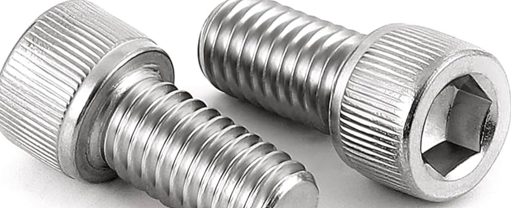
The most common screw on the robot has a round head with a hexagonal hole in it. You turn it with a hex key (an Allen wrench). M4 socket head screws take a 3 mm hex key. That's the single most important tool-to-screw pairing to remember.
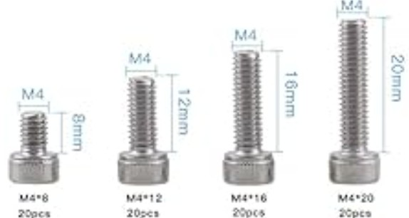
Length is measured from under the head to the tip. The head doesn't count. Too short and the nut can't grab enough thread. Too long and the tip sticks out and hits something.
Add up the thickness of everything being clamped, then add the nut's height (an M4 nylon lock nut is about 5 mm). Two 2.5 mm thick plates is 5 mm, plus 5 mm for the nut, so M4×10. If you're not sure, go one size longer.
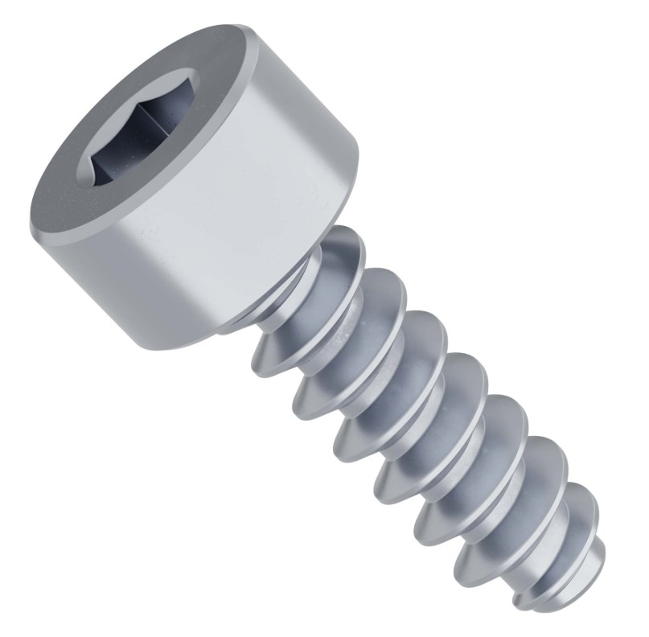
A thread-forming screw cuts its own threads the first time you drive it into a plain hole sized for it. That's fast and needs no nut. The catch: every time you take it out and drive it back in, the hole wears a little more, and over-tightening strips it on the spot.
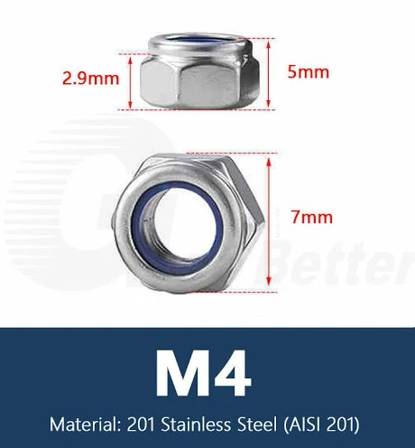
The standard nut is the nylon lock nut ("nylock"). It has a ring of nylon inside one end that grips the screw threads. A robot that drives, turns and crashes into things shakes ordinary nuts loose within minutes. Nylocks stay put.
Use nylon lock nuts on the robot. You'll feel the turning get harder when the screw reaches the nylon. That's normal, so keep going.
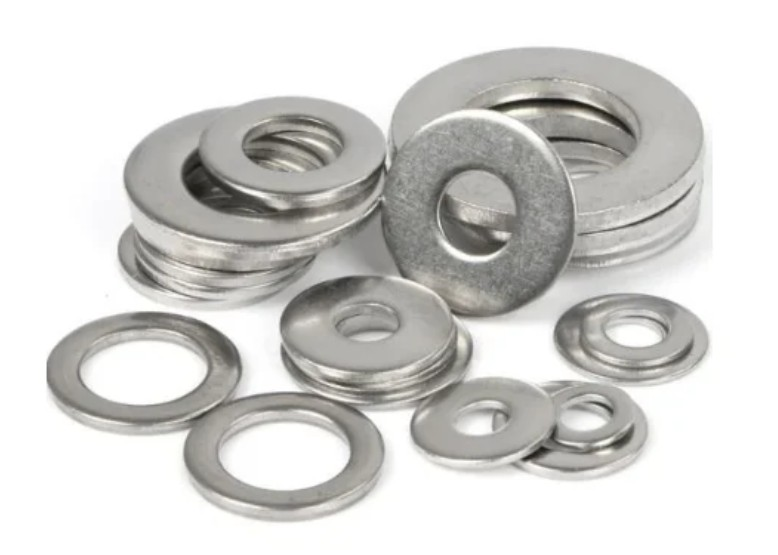
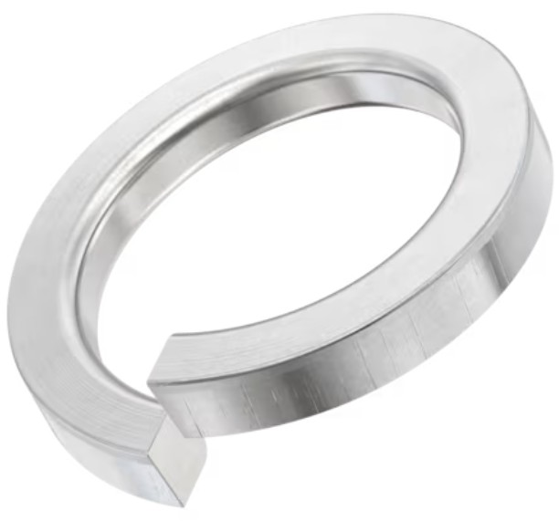
A flat washer spreads the clamping force over a wider area, so the screw head doesn't dent soft aluminum. It also bridges a hole that's too big for the head. A split lock washer is cut and twisted. It flattens as you tighten and pushes back like a spring, which helps resist loosening. Nylocks are more reliable, but a split washer helps where there's no room for a nut.
ID (inside diameter) is the size of the hole. OD (outside diameter) is the size of the whole part. Both are in millimeters.
A washer with a 4.1 mm ID and a 9 mm OD has a hole just big enough for an M4 screw and is 9 mm across. ID tells you whether it fits over the screw or shaft. OD tells you whether it covers what it needs to. The same two numbers describe bearings, spacers, shims and anything else round with a hole in it.
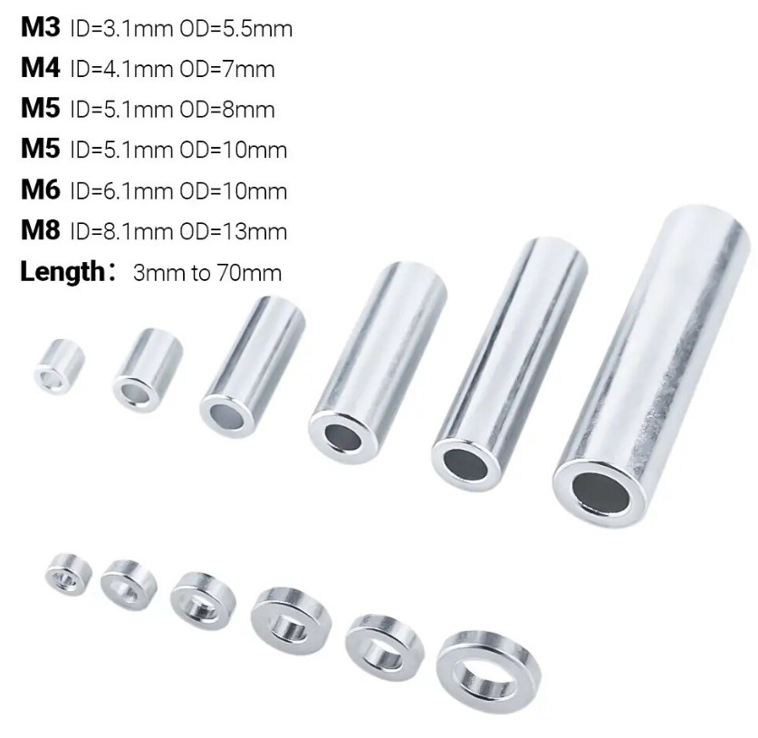
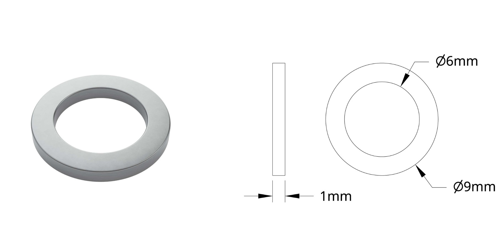
A spacer is a short tube that slides over a screw or shaft and holds two parts a set distance apart. An M4 spacer has a 4.1 mm ID and comes in lengths from 3 mm up to 70 mm. Spacers set wheel positions on a shaft, gaps between channel walls, and the alignment of gears and pulleys.
A shim is a very thin washer, about 0.5–1 mm thick. When a gear rubs the side plate by a hair, even the thinnest spacer is too much, and a shim gives you that tiny adjustment. Shims are the secret to mechanisms that spin freely.
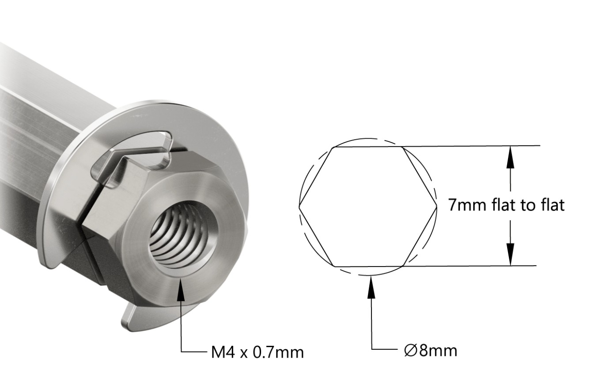
A shaft carries rotation: motor to wheel, motor to gear, motor to roller. goBILDA's REX shaft is a hex shaft, 7 mm across the flats with an 8 mm round outside, so parts with a matching hex hole lock on and turn with it. The ends are threaded M4 so you can put a screw into them, and there's a groove for an e-clip, a small snap ring that stops parts sliding off.
A hex bore part is locked to a hex shaft and turns with it. A round bore part spins freely on the shaft.
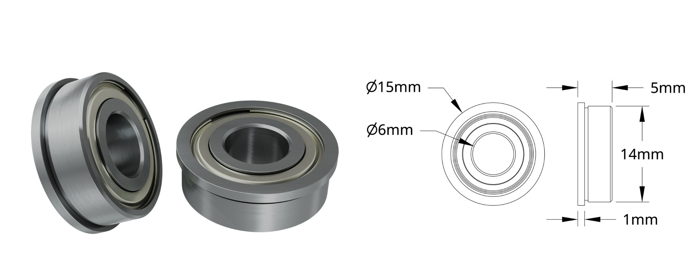
A bearing lets a shaft spin freely inside the frame instead of grinding against the aluminum. A flanged bearing has a lip around one edge that catches on the hole so the bearing can't push through. Inside, tiny steel balls make the friction almost zero.
Press only on the outer ring. Pushing on the inner ring damages the balls. If it won't slide in, check that the hole matches the bearing's OD. Never hammer a bearing in.
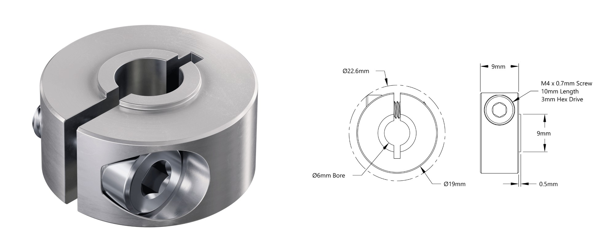
A clamping collar grips a shaft so things can't slide along it. It's a split ring with an M4 clamp screw (3 mm hex key). Slide it into position and tighten, and it squeezes the shaft. Collars usually sit next to bearings to stop a shaft walking side to side.
A motor often can't sit right on the thing it drives. Chain and belts carry rotation from one shaft to another, and different-sized wheels on each end change the speed and torque.
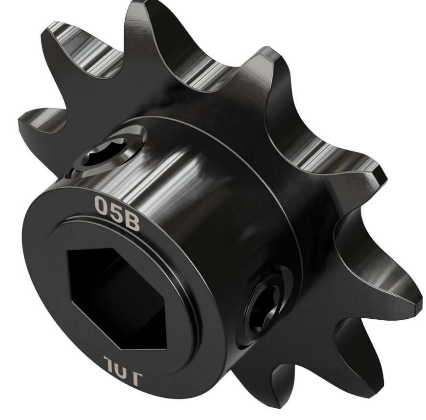
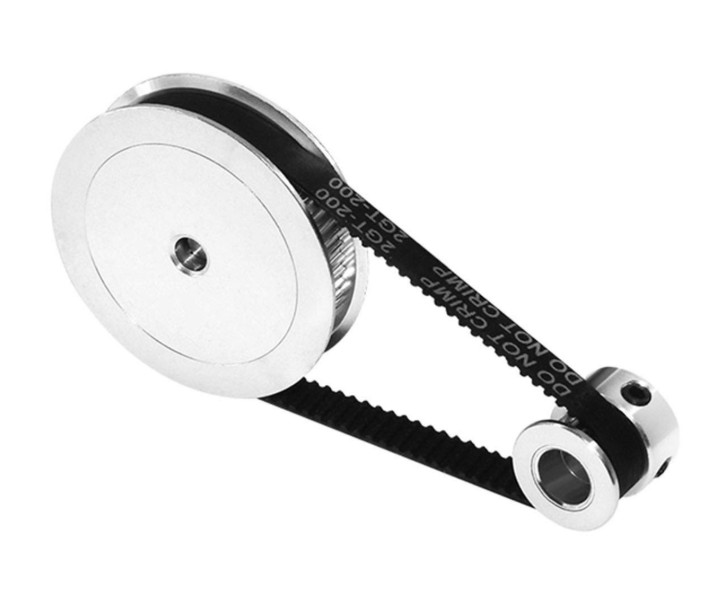
A sprocket meshes with chain, just like a bicycle. goBILDA's plastic chain snaps together link by link, so it's easy to size. A timing belt has teeth on the inside that mesh with a toothed pulley, so it never slips. The common GT2 2 mm belt has teeth 2 mm apart. Belts are lighter, quieter and more precise than chain, which makes them great for intakes, shooters and slides.
A belt only comes in certain lengths, and that fixes how far apart the two shafts can be. Our GT2 belt tools work out the pulleys, the belt and the shaft spacing for you.
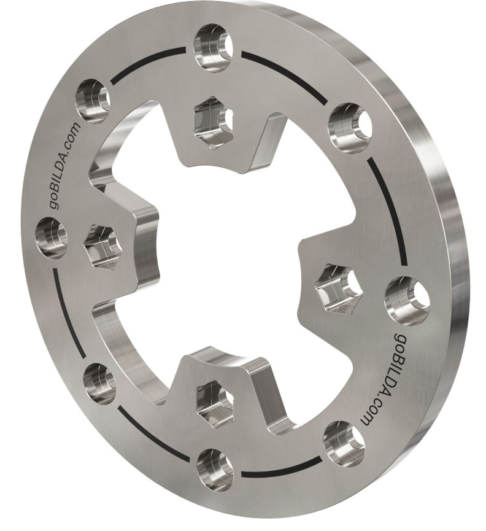
A flywheel is a heavy, carefully balanced wheel. Its weight stores spinning energy, so its speed barely dips when it hits a game piece. That's why shooters use them.
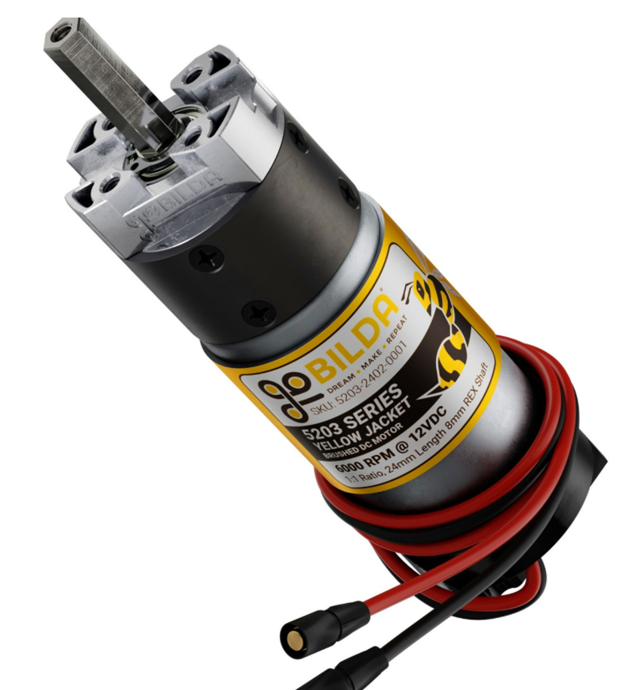
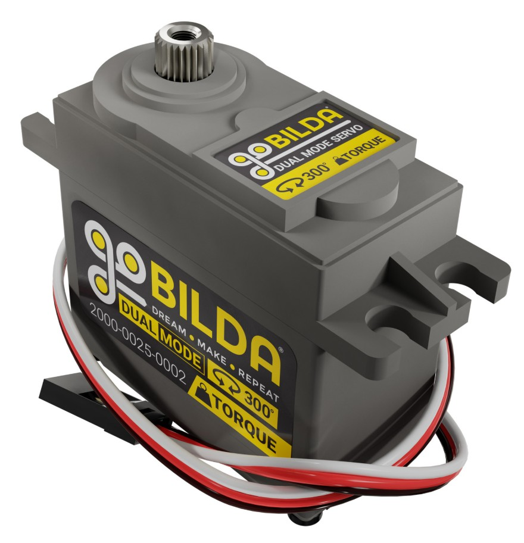
A DC motor is the robot's muscle. Its built-in gearbox trades speed for torque (turning force). A servo moves to a commanded angle and holds it, which suits claws, wrists and latches. For how they're powered, see Electrical Systems.
| Tool | What it's for |
|---|---|
| 3 mm T-handle hex key | M4 socket head screws, so most of the robot. The T-handle gives more control than an L-key. Keep one in your pocket. |
| Ratcheting bit driver | Tight spots. Swap bits and turn back and forth without lifting the tool off. |
| Powered screwdriver | Driving lots of screws fast during big builds. Do the final tightening by hand. |
| Digital caliper | Measuring anything to 0.1 mm: screw diameter, spacer length, hole size. |
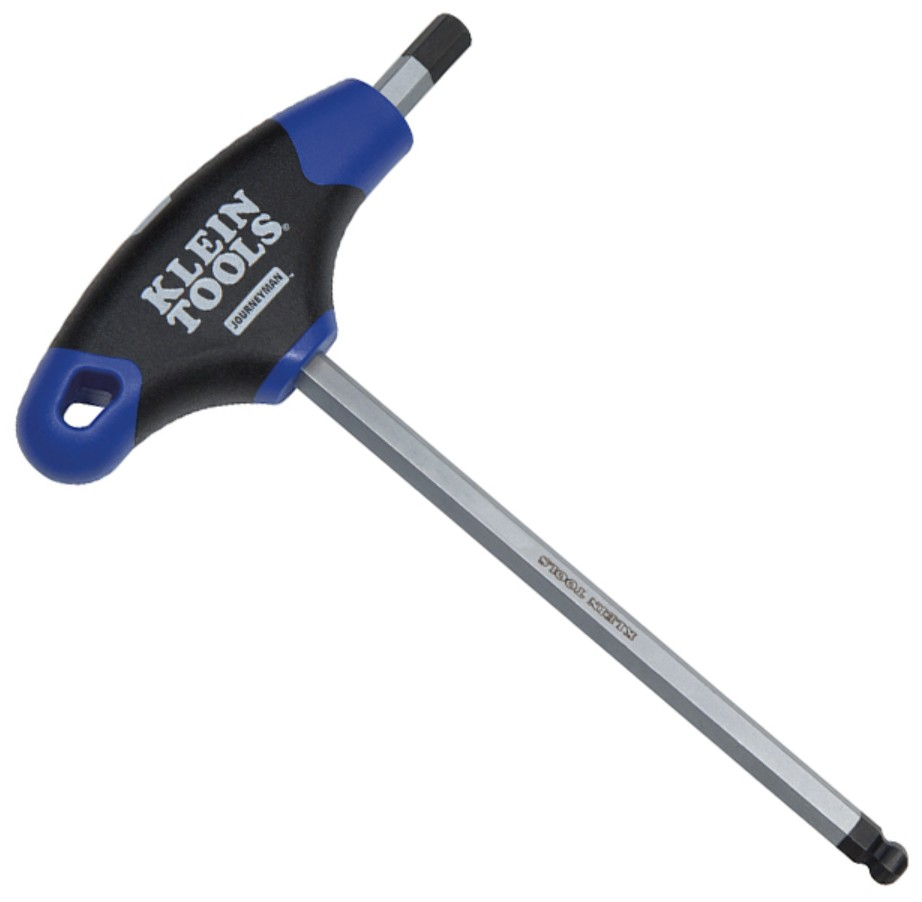
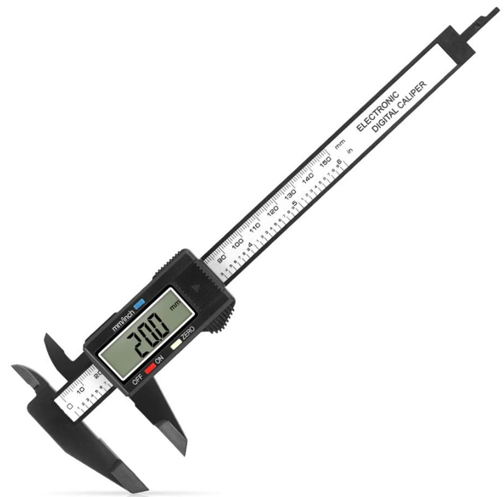
A caliper has three ways to measure: the big outside jaws (screws, shafts, spacer ODs), the small inside jaws (holes and slots), and the thin depth rod at the end (how deep a hole or step is). Is that screw M3 or M4? Measure it, don't guess.
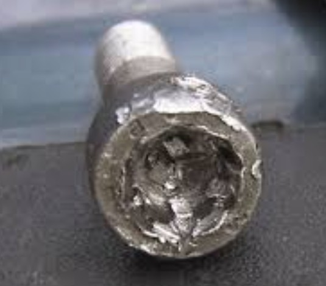
The hex key rounds out the socket and then just spins. Causes: the wrong size key (2.5 mm in a 3 mm socket wrecks it fast), turning at an angle, a worn key, or forcing a stuck screw. Prevention: use the right key, seat it fully, and push straight in.
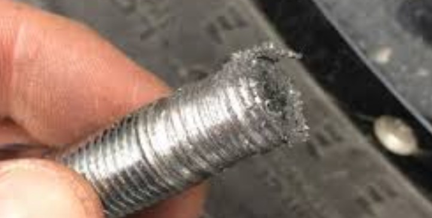
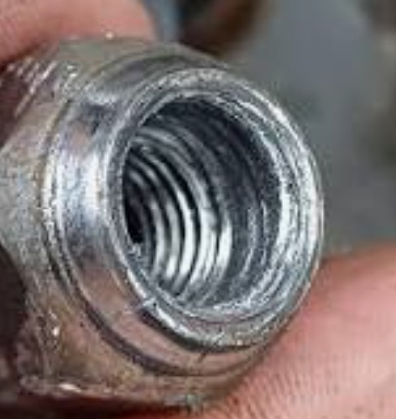
The screw spins but never tightens because the threads are torn. Over-tightening is the number one cause, followed by driving a thread-forming screw in and out too many times. In aluminum, a stripped hole often means replacing the whole part.
With M4 screws in aluminum, stop when the parts are pressed firmly together and the screw won't turn easily any more. If you hear creaking or see the metal flex, you've already gone too far.
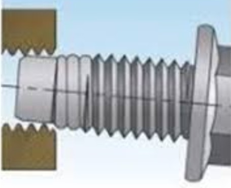
The screw goes in at an angle and its threads cut across the nut's threads, damaging both. It feels stiff from the very first turn, and it may wobble. Prevention: always start screws by hand. A straight screw turns easily for the first few turns.
Before tightening, turn the screw backwards until you feel a small click. That's the first thread dropping into line. Now turn forward and it will start straight.
Powered screwdrivers make stripping easy. Use one to run screws most of the way in, then finish by hand. That applies double to thread-forming screws in aluminum.
| M4 socket head screw | Holds most of the robot together. Use a 3 mm hex key. |
| Thread-forming screw | Cuts its own threads. Easy to strip. |
| Nylon lock nut | Resists vibration. Use these. |
| Flat / split washer | Spreads load / adds spring tension. |
| Spacer / shim | Sets a gap: big (3–70 mm) or tiny (0.5–1 mm). |
| Hex shaft | Carries rotation. Hex-bore parts lock onto it. |
| Flanged bearing | Lets a shaft spin in the frame. |
| Clamping collar | Stops parts sliding along a shaft. |
| Chain / timing belt | Moves rotation between shafts: strong / light and precise. |
| Flywheel | Stores spin for steady shooter speed. |
Pick up five different parts from the build table. Name each one, and use a digital caliper to check at least one measurement: a screw diameter, a spacer length or a bearing OD. Write what you find in your engineering notebook.